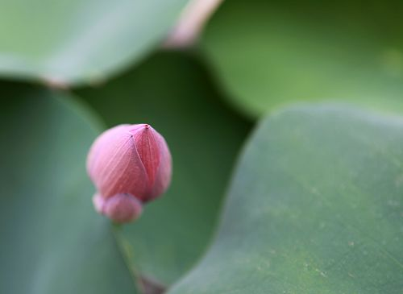
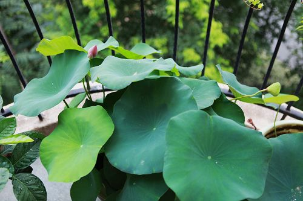
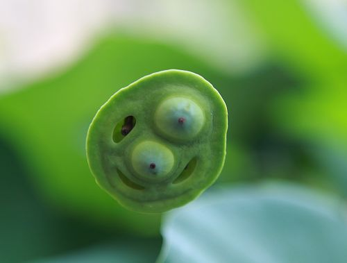
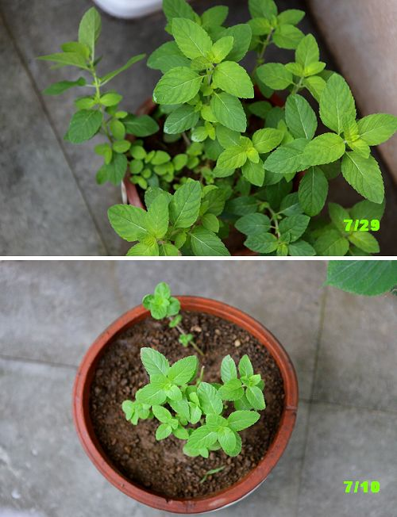
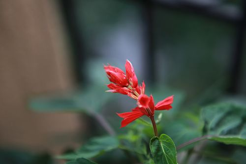

喜欢傍晚天色还没有完全暗下来，遛狗时路过人家的小院子，看到喜欢的就故意停下来装作不经意地瞅两眼。有些院子被自家种植的树挡住了视线，在这些或清楚或模糊的印象中，有两家院子深得我心。
一家从叠加别墅即将转移到同小区的联排居住，新院子种了一些金桂，听男主人说只花了7000元打理花草植物，但我更爱他家的老院子。老院子的一边种着一棵红色的枫树，叶子似乎常年都是红色，到了夏季黯淡些。另一边是棵绿树叶的龙爪树，这两棵树体形迷你又结实，不象树更象是盆景里的植物。翠绿的草坪里嵌着许多米色的鹅卵石拼接成的小径，大阳台下一排各色花朵，开花的时候各自为阵，一朵是一朵的，而不是繁花簇锦。挑高大阳台上一对白色的花园椅和一张桌子，为整个花园突出了主题。角落里有一座鱼池，里面真的养了红色金色的鲤锦，上面没有封上铁丝网，似乎并不担心野猫。干净简洁又充满自然气质的院子，很精致。
另一家的院子里有原木的花园桌椅和植物架，草坪肥美，种植在花盆里的植物，外面套着木制的装饰盆，散落在院子的角落里，偶有一两个陶制小人儿从草坪里探出彩色的身体，同样是鹅卵石的小径将主人从家中引向户外休闲处。每次视线都不能顺利将里面一探究竟，只能将看到的景物拼凑在一起想象。即使这样，院子里面的摆设与植物形成的默契，让人每次路过都想再看一眼。
环境代给人的满足感不亚于室内装修，生长美好的植物以及恰倒好处的庭院设计透露着这家人的内心与生活情趣，让路过的人身心也得到了享受。我的总结是，院子里的植物不能泛滥，一定要有选择的搭配，要让院子看上去更精神，就象人的头发经常需要打理是同一个概念。无论有没有属于自己的院子，每个热爱生活的人心中都有自己的梦想花园，哪怕只是一个窗台，哪怕在厨房的洗手池边上，也可以种点花草伴随我们一同生活。
换盆的荷花，荷叶越长越多，继第一朵荷花消失后，第二朵体形更大的荷苞长出来，喜人。


荷花的花期短，从盛开到凋零仅仅两三天的时间，花瓣脱落后，剩下这个，象女性的胸部，又象是外星人的大眼睛。它比其他莲蓬都要大，莲子却只有两颗。属于发育比较奇特的。有人说从这里看到了三张脸：惊愕的，微笑的，发愣的。

墙根下的薄荷长势迅猛，刚搬回家时上面没有一片叶子，从7月10日到今天，半个多月就长成这样了。它似乎是株吃素的植物，只需要喝水，就能开心的生长。

老爸给的一串红，这两天冒出红色的花朵，这花难道不是要到秋季才开的吗？

刚到我家时它还没有这么高，渐渐长成这样，与它所在的花盆极不相称。我就想把这只长叶子不见花朵的一串红送还给我爸。结果这两天顶上冒出花朵，虽然小小的，但却让人无法忽视。原来它拼命的长啊长啊，是为了迎接花朵们的到来？

14 Responses to “梦想花园”
2010-07-29
整盆绿萝攀爬。
2010-07-29
品种丰富,形势喜人啊!
2010-07-29
把荷花交给某人打理，昨天晚上一看，快死了……水分不够叶子全部蜷缩起来，哭鸟。
2010-07-29
一串红现在开，一直到秋天。。。
2010-07-29
荷花不用怎么打理，保证阳光充足保证水源。一串红能开到秋天就太好了，本来看它越长越高，都想还给我爸了。结果现在开花了，真好。
2010-07-29
好羡慕你的薄荷啊, 我怎么就养不好呢，第三盆也快枯萎。。。我是不是浇了太多水了。你每天浇几次呢？
2010-07-29
这时候一天浇一次，早晨或者晚上，千万不要在最热的中午浇水。以及不要让阳光直射它。我把薄荷放在墙根处，既通风有光线，又不直接暴露在阳光下。
2010-07-29
一串红，我们可以嗦蜜吃。
2010-07-29
小时候的确会摘下里面的芯舔里面的蜜吃，你的生活经验好丰富啊~我现在在家没开空调，都是汗哦~爽~
2010-07-29
对的对的,没想到小朋友也会有这样的记忆!今天怎么不开空调,太热了!不过也许你都在忙碌.
2010-07-30
惭愧，我那天天面对的植物们以及滴水观音，真是可怜的孩子们遇上了粗暴娘~，不是忘记胶水就是一次来个洪峰。。。
2010-07-30
原来昨天我们在不约而同的飙汗。嘿嘿，洗完澡淌汗真是舒爽啊！
以及问问，我家荷花也残了。花苞烂了，我都不知道怎么回事。。。
2010-07-30
疯长的枝叶可以剪掉，给花蕾留足养分，而且这个季节搞下，不用担心花枝长不出来。。。跟俺Green Thumb老妈学的。
2010-07-31
我在凉台上也种了一盆薄荷，时常在泡茶或者凉拌色拉的时候随手摘两片清香的薄荷叶子增添风味，很棒。另外这种植物的好处是非常好活，可以随手折一段插进有水的瓶子里，这样就多了一棵小薄荷。
自制提拉米苏或者凉拌色拉的时候放两片薄荷叶子也会显得更加专业，虽然只是这么简单的一个小步骤。
Leave A Reply
存档只读，评论已关闭。